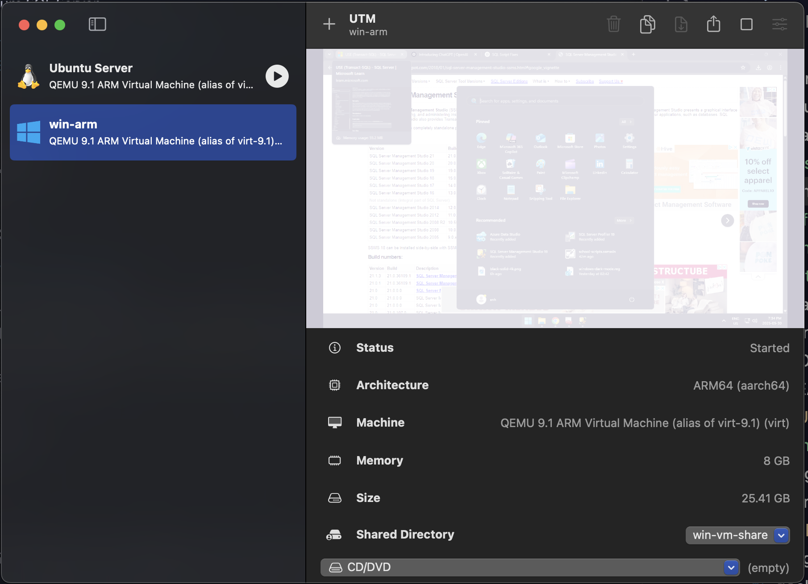
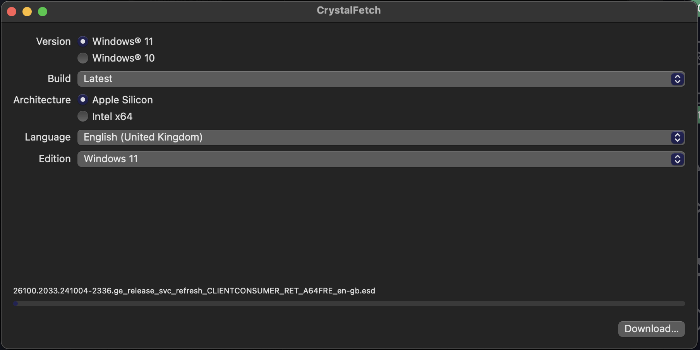
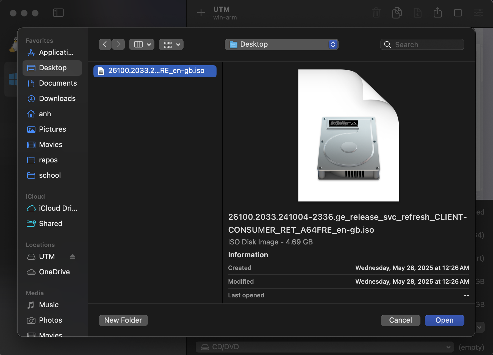
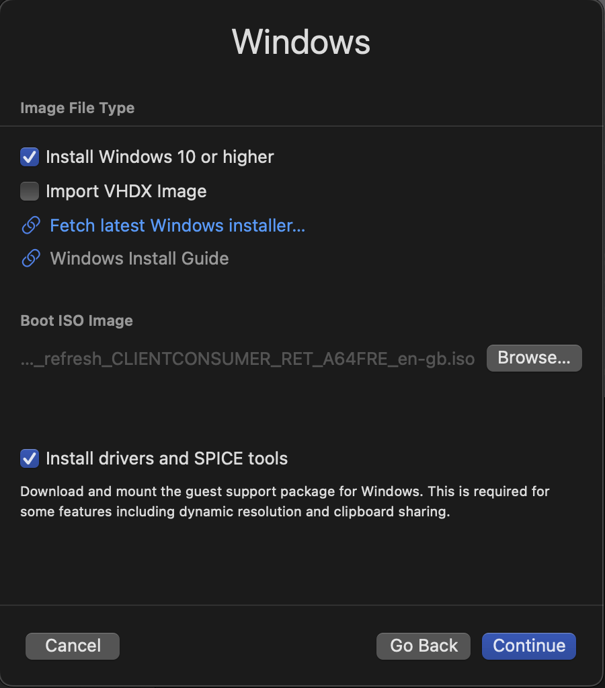
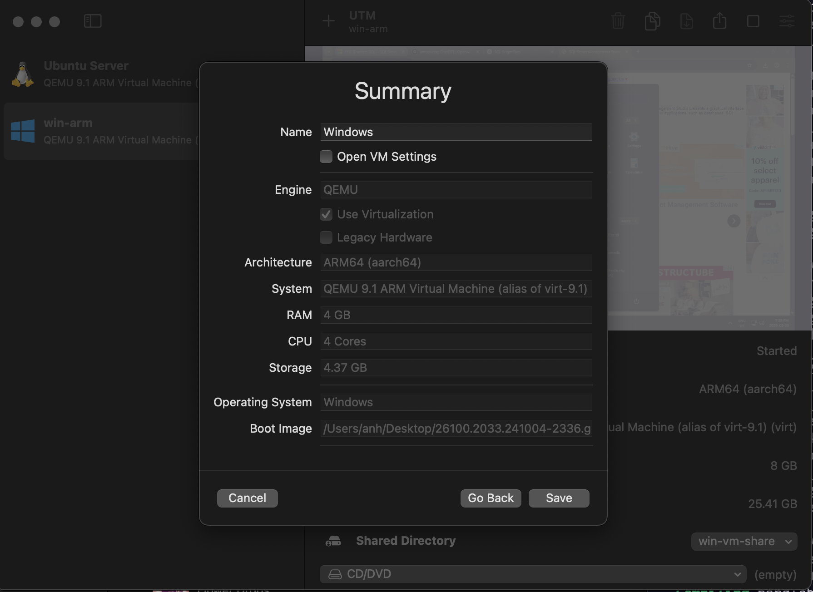
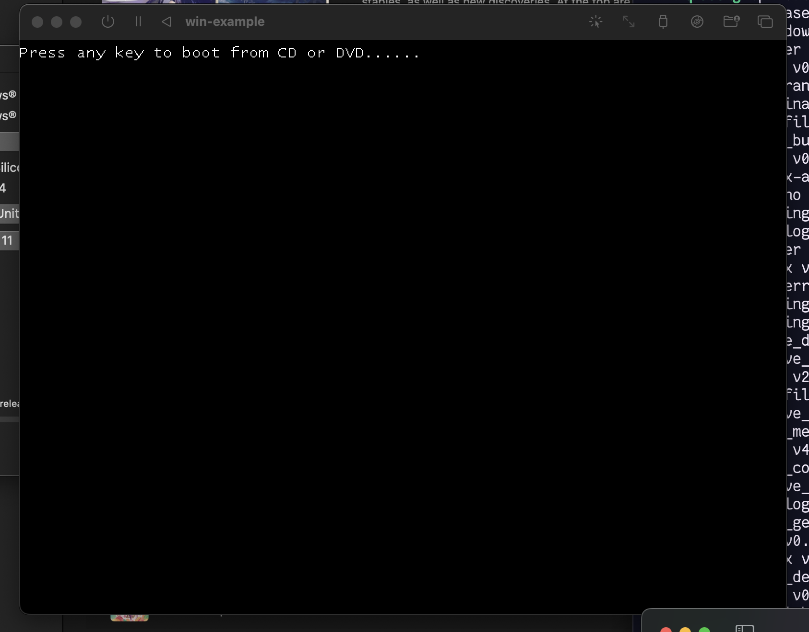
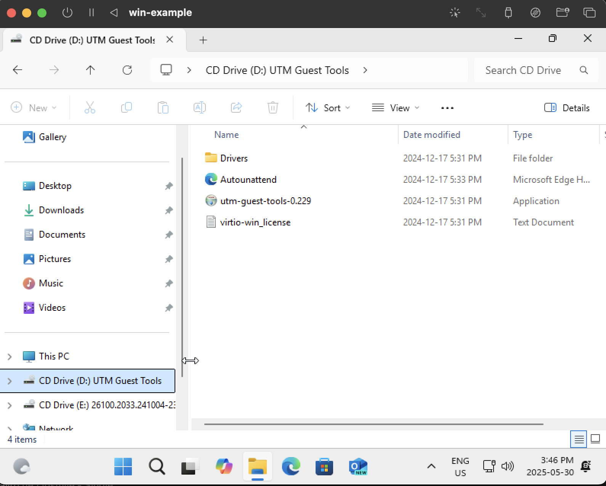
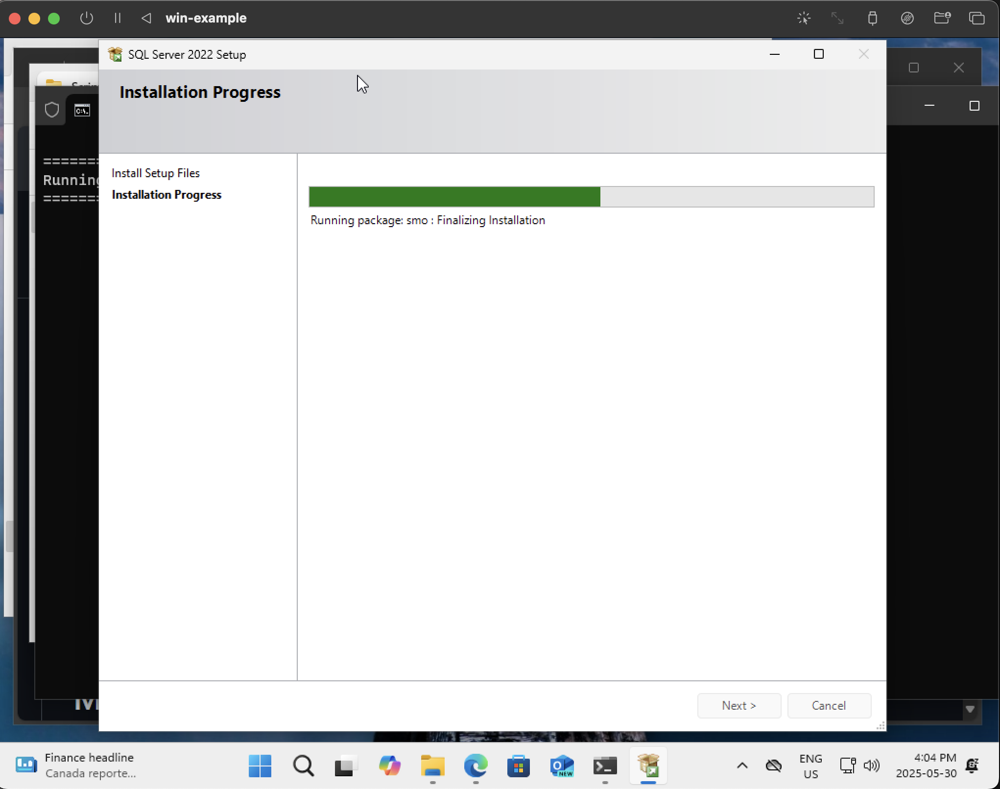
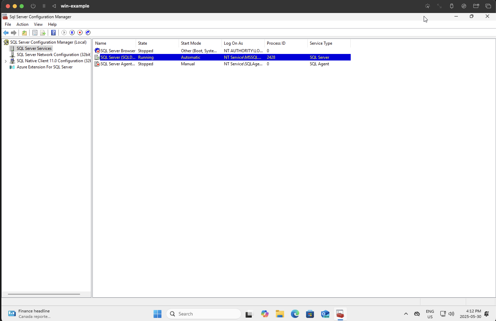

Microsoft SQL Server + Studio on macOS ARM64
Introduction
This is a EXTREMELY LONG procedure from start to finish, so make sure you are able to dedicate 3-4 hours, depending on how familiar you are with stuff and how fast your Mac is, to go through them.You may use your Mac during the process.
These are the step-by-step instructions for getting the Microsoft SQL Server and Studio on an ARM64 (aarch64) macOS device.
Supported versions:
- SQL Server <= 22
- SQL Management Studio:
- 19 (tested - ✅)
- 22 (tested - ❌)
It is highly recommended that you use a Windows x86 64-bit machine to natively run the MSSQL stack if possible to save time and effort. This solution should be a last resort.
Overview
- Install UTM
- Create Windows ARM64 virtual machine
- Install CrystalFetch
- Download Windows ARM64 iso image
- Install Windows
- Use install script from https://github.com/jimm98y/MSSQLEXPRESS-M1-Install to install SQL Server
- Configure SQL Server
- Install SQL Management Studio from https://download.microsoft.com/download/7/7/3/7738e337-ed99-40ea-b8ae-f639162c83c3/SSMS-Setup-ENU.exe
- Start SQL Management Studio
Install UTM
Installation
- https://mac.getutm.app/
- Click on Download button
- Save the
.dmgto a location on your Mac device. E.g. Downloads - After downloading, double click on
UTM.dmgto mount the disk image - Drag and drop the
UTM.apptoApplicationsfolder - Installation complete
What is UTM?
Create a Windows ARM64 virtual machine in UTM (Part 1)
DO NOT START FROM THE MOUNTED DISK IMAGE.
- Start UTM by either from Spotlight search or from Applications folder
- Click Yes/Continue/Ok when the macOS security prompt appears
- You will be presented with the UTM window (screenshot, but empty)

- Click on the plus icon at the top of the window
- Creation dialog appears
- Select Virtualize option
- Select Windows
- Click on
Fetch latest Windows installerlink
Using the CrystalFetch app
- Download, install and open the CrystalFetch app
- Keep default options as-is
- Select your preferred Language. E.g.
English (United Kingdom)to avoid logging in with Microsoft account - Select
Windows 11as the Edition - Click on
Download...button
Create a Windows ARM64 virtual machine in UTM (Part 2)
- After CrystalFetch finishes downloading, go back to the UTM dialog
- Under Boot ISO Image, click on
Browse...to select the downloaded ISO image

- Make sure
Install drivers and SPICE toolsis checked - Click
Continue - Allocate memory to the VM, select at least 50% of Mac device memory. E.g. 8192 MiB on a 16 GB Mac
- Allocate CPU cores to the VM, select at least 50% of performance cores on Mac device. E.g. 4 Cores on a 10-core Mac (8 performance cores, 2 efficiency cores)
- Click
Continue - Storage size should be at least 80 GB
- Click
Continue - No need to configure Shared Directory
- Click
Continue - On Summary page, click
Save
Install Windows
- Boot up the created Windows virtual machine by clicking on the play button next to the entry in the list
- PAY ATTENTION, when you see the
Press any key to boot from CD/DVD, pressEnteror any key. This is only necessary for this step, ignore on future restarts.
- Windows installer will now start booting. You should see the Windows loading animation.
- Once the installer is loaded, leave language settings as-is, click
Next - Select
USas input method, or Canadian French or Canadian Multilingual Standard where applicable, clickNext - Select
I don't have a product keylink at the bottom - Select
Windows 11 Pro, clickNext - On EULA screen, Click
Accept - On Select Location to install screen, leave as-is, click
Next - Wait for the installation to be done.
- The virtual machine will automatically restart several times
Windows setup after installation
- You should now be looking at the (white) Windows setup screen
- Select region: Canada in this case, click
Yes - Select keyboard layout: US or Canadian, click
Yes - Select second keyboard layout: click
Skip - Windows setup should now start installing additional updates if applicable
- Create a local user account with name, username and password
- Setup should now start installing updates (again 🤡 because MSFT devs and product managers are mostly dumb-dumb, but not me). Will take a while depending on your internet connection.
- After which, it will restart several times again, as if it doesn’t want you to use the crappy software, then log in and you should be at the Desktop
Install drivers and tools
- Open Explorer (yellow folder icon on the Taskbar)
- On sidebar, select
UTM Guest Toolsdrive
- Double-click on the
utm-guest-tools-<version-number>installation application - On the installer window, click
Next,I agree - Wait for the installation to complete
Install MSSQL Server + Studio
MSSQL Server
For convenience, reopen this instruction website on the virtual machine browser (MS Edge)
- In the virtual machine, open a browser and open this link https://github.com/jimm98y/MSSQLEXPRESS-M1-Install/archive/refs/heads/main.zip
- After the zip file is downloaded, extract it
- Navigate into the extracted folder: e.g.
MSSQLEXPRESS-M1-Install-main\MSSQLEXPRESS-M1-Install-main\src\Scripts - Double-click on
Sql2022Developer.batscript file - On the Windows protected your PC popup, click
More infolink - Click
Run anyway - Wait for the installation to complete (around 30 minutes)

- After it finishes, start the Sql Server Configuration Manager to verify the SQL Server Services is running (screenshot below)

- You can close the app, the services are running in the background.
MSSQL Studio
- Download MSSQL Studio 19 installer from here: https://download.microsoft.com/download/7/7/3/7738e337-ed99-40ea-b8ae-f639162c83c3/SSMS-Setup-ENU.exe
- Double-click to start the installer, will take longer than expected to start. This is because it is running through the architecture translation layer.
- You’re now seeing the setup window.
- Leave the default location and click on
Install - Wait for the installation to complete.
- Close the setup to finish.
Start MSSQL Studio 19
In the Windows start menu, there should ne MSSQL Management Studio 19 shortcut. Click on that to start. Will take a moment to start.
Leave the Connect to Server dialog fields as-is and click on Connect.
Done.